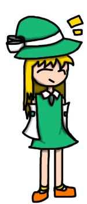
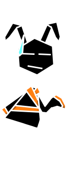
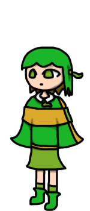
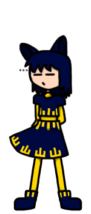
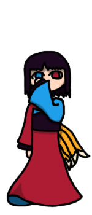

CHARACTERS
idiots who shape this project
Protagonist: Kana, Mugen no Pikuseru
kd02: Suneku, Shinbokasha, Shihi
suibun and reija shall appear soon

KANA
The One of All Colors
Human with the Ability to Manipulate Color and Push Away Objects
t h e p r o t a g o n i s t
theyre p cheerful but become seriousness when an incident happens
theyre stupidly strong and their ability comes from a dead god
they live in a random house near
the forest of those forgotten

MUGEN NO PIKUSERU
Eternal Bug
Insect Youkai with the Ability to Manipulate Infinity, Steal Strength and Exorcise
deuteragonism
they dont care about a single thing and talk like me
kana thinks theyre cool regardless and they live in their house
they have three abilities out of which one always existed, one was restored from kd01
and one i made up out of nothing for no reason
theyre older than yume no genjitsu which is where this project happens in
which is
also older than a certain land of illusions so theyre p old

SUNEKU
Youkai Pet Snake
Snake Youkai with the Ability to Manipulate Snakes
who

SHINBOKASHA
Strange Formal Cat
Cat Youkai with the Ability to Manipulate Written and Spoken Language
they used to be the gatekeeper of hell but they were bad at it so no longer
now they just serve shihi
theyre the only one who cares to speak formally and be silent when investigating
so they end up looking p weird

SHIHI
Four Tailed Fox
Fox Youkai with the Ability to Manipulate Fire
the only one with an exact age, 300 years because 4 tails
they usually existed in hell but now show up in yume no genjitsu more
shinbokasha serves them
they have the coolest theme even though it didnt fit my idea of shihi from that time
they also wanna solve incidents